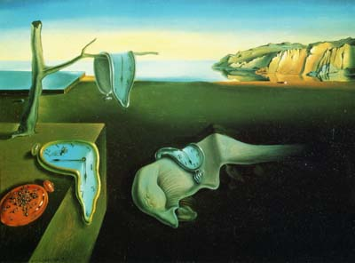

早上，躺在宾馆的床上看央视新闻频道，见滚动字幕显示梅艳芳因病于凌晨去世，心中不由一震。
前几天，还看到她的经纪人说，阿梅身体并不大碍，正在等张艺谋的通知去演“埋伏”呢，怎么说没就没了呢？
我不是她的歌迷或影迷，或者说不是她的fan，所以也很少关注她的一举一动，只是以前看过她的电影“半生缘”及她与张国荣演的一些片子，再加上她本人红得发紫，或多或少也见到了一些报道，因而也便有了一些印象。
 人到不惑，将要开始一个人生的黄金时段的时候，突然的去世总让人感到一些无奈。人类的科技，可以把人送到天上，却无力面对某些疾病的挑战；现代医学可以延长人的平均寿命，可是每个鲜活的生命却仍旧如此脆弱。
不几个月前，blogger们还在悼念羊男的辞世，他们难以接受一个刚刚还在blog的blogger，永远停止了blogging。不几天前，人们还在痛惜开县234个生命离去，一群普通的人们，在欢乐的新年即将到来之际，却在自己的温馨的家中遭此天灾人祸。。。。。。。
我不相信世世轮回和命运天定，我却只能叹惜于人类整体的日益强大，而每一个生命却依旧如此脆弱。
我非常喜欢梅艳芳的歌曲，敬佩她在艺术方面伟大的创意。
Posted by: 自由勇 at January 4, 2004 08:31 PM她身有重病，依然在第二次化疗之后，开了8唱的个人演唱会！她真是好坚强！
Posted by: 歪理 at December 30, 2003 11:03 PM